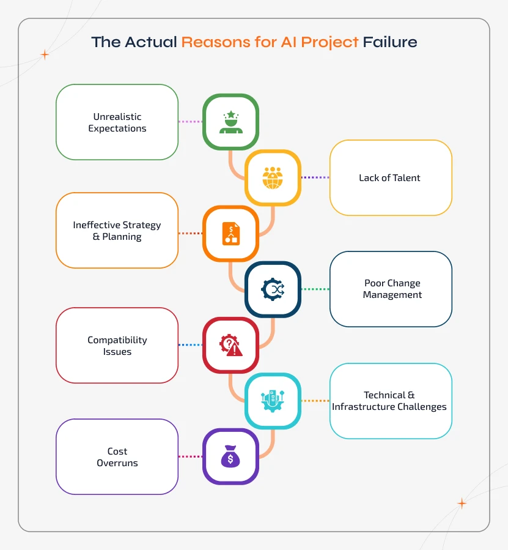
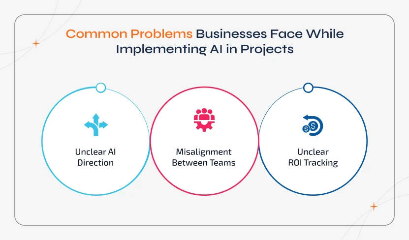
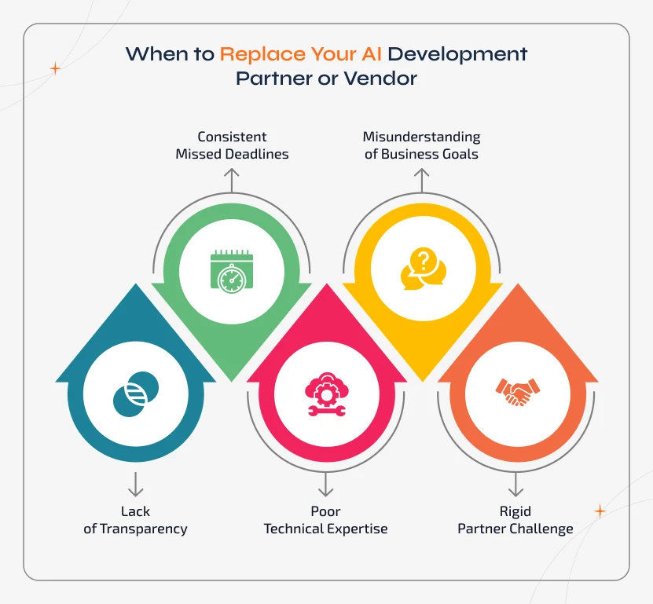

Imagine a startup or mid-sized business spending months of effort and budget into an AI development system, just to see it crash even before the launch. The results don’t match the business vision, and this is what we call an “AI project failure”. In this blog, we’ll break down the main AI failure reasons, the factors behind them, and how to avoid them before your next AI initiative hits the floor.
Understanding AI Project Failure
The true meaning of AI project failure isn’t always about technical flaws. It’s actually when the final outcomes don't meet the business goals or user expectations. At times, the AI model might work perfectly in testing, but it struggles in real-world scenarios. In other terms, the given insights don’t add real value.
Most of the AI project failures don’t happen overnight. From unclear objectives to miscommunication, they build up slowly and affect the business growth. In some scenarios, businesses jump into AI just because it’s trending, without thoroughly understanding what problem they’re solving. This is where the crack begins to show.
Observing these AI failure patterns early is the initial step to making your project work without flaws.
Data Roadblocks in AI
As you know, data plays a vital role in the success of an AI project. Most of the projects slip away not because of weak algorithms, but due to inconsistent data. From collecting the right data to model training, each stage is packed with AI project challenges that determine the system’s outcome.
- Data Quality Issues: Incomplete, inaccurate, or duplicated data leads to unreliable AI outcomes
- Data Silos: Scattered datasets across teams or frameworks will limit access to create the data picture.
- Bias & Imbalance: Unbalanced data will create biased model predictions, which is a major roadblock and leads to AI project failure.
- Privacy Risks: Strict data laws, like HIPAA and GDPR, make data handling more complex.
The Actual Reasons for AI Project Failure
AI projects might sound like an easy catch, but many businesses never reach their intended goals. Beyond data failures, the problem will always arise from the AI implementation strategy, people, and technical execution. Here’s an in-depth look at why many businesses face AI project failure.

1. Unrealistic Expectations
Plenty of organizations jump
into AI without any prior knowledge and think they will succeed. Whereas the
executives often think that the model will work flawlessly from day one. On the
contrary, AI needs time, tweaking, and gradual improvement. When the expectations
aren’t realistic, projects will get rushed or abandoned, even if the AI has
potential.
2. Lack of Talent
Building an AI project isn’t easy. It
does require expertise, including data scientists, Machine Learning engineers, and
AI architects, to build a robust model. Also, without a skilled development team,
project delays will occur, which affects the overall business’s reputation. The
talent shortage often forces firms to hire less experienced staff or overwork with
small teams, leading to increased risks.
3. Ineffective Strategy & Planning
Projects without a
proper roadmap, objectives, or performance indicators will often drag the system.
Without it, teams will begin to focus on appealing AI features instead of solving
real-time business problems. As a result, the efforts and resources can be wasted
without delivering any value.
4. Poor Change Management
Implementing AI will often lead
to changes in workflows and processes, but teams might not be ready for the change.
At times, employees will resist adapting to new frameworks, fearing of extra
workload. Without proper training and communication, even a technically stable AI
system will fail to carry out daily operations flawlessly.
5. Compatibility Issues
AI systems don’t work alone. They
need to work alongside existing software, databases, and tools. Incompatible
systems, outdated infrastructure, or fragmented workflows can prevent smooth AI
integration. This will slow down the deployment and limit it to unleash its full
potential.
6. Technical & Infrastructure Challenges
A successful AI
project requires strong computing resources and specialized software tools. So,
without an adequate infrastructure, the projects will face slow processing, frequent
system crashes, and scaling issues. Organizations that underestimate these needs
will often face issues.
7. Cost Overruns
Sometimes, an AI
project becomes expensive when the deadlines are extended, infrastructure is
upgraded, or talent costs rise. If you fail to conduct financial planning and
realistic budgets, even a promising AI project becomes a drag, wasting the team’s
time and resources.
Common Problems Businesses Face While Implementing AI in Projects
While rolling out AI in real-world business environments, business heads and project managers often face challenges that the tech teams alone can’t solve. Here are the five key problems that a business will encounter while implementing AI in projects:

Unclear AI Direction
Most of the leaders know what they
actually want, but struggle to define how AI can assist them in achieving the goal.
Most of the time, turning a business goal into a stable AI use case needs both
technical understanding and domain expertise. Without a clear translation, teams
will fail to achieve the goal.
Misalignment Between Teams
Each team will speak in their
own terms. The AI team will speak in metrics like precision and recall, whereas the
executive cares about revenue and market impact. Any misalignment between the teams
leads to confusion and leads in AI project failure.
Unclear ROI Tracking
Even though the
AI is deployed successfully, it's often confusing how to measure its real success.
There isn’t a consistent key performance indicator to track the ROI, efficiency, or
process improvement. Without a clear measurement framework, the AI results feel
unclear to the upper management.
AI Project Failure Examples - Learning from Unsuccessful Implementations
Sometimes, even the top companies have learned their lesson that AI isn’t just a magic fix. These real-world failures show how project pitfalls can turn innovations into failures. Startups and mid-level enterprises can learn valuable lessons from AI failure examples.
1. Klarna’s AI Support Misstep
Klarn, a well-known fintech
company, leaned heavily on AI tools to replace its customer support service
operations. Later, they found that AI-driven support isn’t delivering the required
information, and the customers are unsatisfied. So they end up reassigning marketers
to the customer support role again to refill the mess they created.
Lesson Learned: AI in different domains can assist humans to quicken tasks, but replacing humans in sensitive customer-facing roles without proper reliability.
2. IBM “Watson for Oncology”
Back in the days, IBM
partnered with MD Anderson Cancer Center to build “Watson for Oncology”, an AI tool
used to assist doctors with diagnosis and recommended treatments. However, it ended
up giving false suggestions as it fully relied on limited data. Due to this, the AI
couldn’t interpret complex real-world situations.
Lesson Learned: If you’re building AI in sensitive environments like healthcare, you must make sure the data is cent percent real and understand the context and complexity.
3. McDonald’s AI Misfire
McDonald's partnered with a tech
firm to experiment with an AI-powered drive-thru ordering system, which is meant to
boost accuracy and decrease wait time. However, the real-world drive-thru conditions
didn’t favour them and made the system go off, and the pilot was terminated.
Lesson Learned: Before the implementation, the heads must consider how the system will perform under messy and unpredictable real-time conditions.
What Happens When a Failing AI Project Gets Rescued
When the AI project starts falling apart, software rescue teams will step in to fix the broken things. Here’s the aftermath once the failed AI project gets rescued.
- Reassessment - Teams will finally understand what went wrong and drop overhyped goals. Further, they begin to realign the project with actual business needs.
- Data Revamp - After the rescue, weak or biased data gets fixed, AI models are retrained, and the performance finally starts making progress.
- Strategic Alignment - The engineers and executives begin to sync up, resulting in better outcomes.
- Phased Growth - Instead of relaunching on a large scale, they begin to test in smaller versions, prove value, and start expanding strategically.
- Trust Restored - Once the business feels the results are improving, leadership trust returns, and the failure turns into a strategy for implementing AI next time.
When to Replace Your AI Development Partner or Vendor
Not every partnership will end in harmony. Some will face delivery issues, tech flaws, and a budget raise. Learning these signs early will help businesses to switch to another partner to avoid time delay, excess budget, and missed opportunities.

Consistent Missed Deadlines
If you have a thought that your
AI partner repeatedly misses milestones, it not only delays the project but also
increases AI development costs and frustrates
the stakeholders. Over time, the leadership will start losing confidence, and the AI
initiative will drag.
Misunderstanding of Business Goals
If the vendor fails to
translate your objectives into actionable AI solutions, the solutions fail to solve
real-time problems fluently. This misalignment often leads to wasted resources and a
low Rate of Interest.
Lack of Transparency
Hidden blockers, inconsistent
reporting, and unclear updates make it hard to know what exactly is happening in the
regular workflow. Also, without clear visibility, you cannot correct the path early,
which does increases the risk of project failure.
Poor Technical Expertise
If you sense the partner struggles
with model training, handling complex tasks, or scaling the AI solutions, the final
output will be filled with flaws and cause AI project failure. This results in
wasted investment and missed opportunities.
Rigid Partner Challenge
A vendor who
sticks to the old and traditional methodologies and ignores new data or changing
needs will gradually slow down things. In this fast-moving AI environment, being
inflexible will turn a well-planned project into an ineffective one.
Why Choose Sparkout for AI Project Rescue
Every failing AI project needs a dedicated rescue team, and this is why Sparkout steps in. With expert recovery, smart integration, and measurable business impact, we promise to get your AI project back on track.
Expert AI Recovery Team
Our experts in Sparkout don't just
patch issues. Beyond that, we will dive deeply into diagnosing the failing AI
projects, optimizing data, and retraining models. Following this, we ensure your AI
model delivers results quickly and reliably.
Seamless Integration
Our team ensures that your AI model
fits perfectly into your existing systems and workflows. This reduces the
disruption, costly workarounds and makes the AI tools seamlessly usable by your
teams.
Business-Focused Approach
We promise that every AI solution
is directly aligned with your KPI and business objectives. Instead of building
flashy models that look impressive by stall result, we focus on measurable outcomes
that really matter.
Quick Turnaround
For a successful business, time and money
are everything. From pinpointing the root cause to retraining the models, we
implement agile methodologies to reduce downtime and deliver real value from the AI
without delays.
Risk Mitigation & Compliance
Our
expert team checks for bias, follows ethical practices, and ensures your data and
the AI systems meet the necessary rules and regulations. This approach keeps your AI
system safe, reliable, and trustworthy.
How Sparkout Helps Clients in Optimizing AI Projects
Most of the clients choose Sparkout because we turn struggling projects into reliable systems. Here’s the detailed approach on how Sparkout actually help clients in assisting and solving AI project failure.
Diagnosing AI Flaws - We audit your AI pipelines to pinpoint exactly where the model went to. Based on that information, we use our advanced tools and frameworks to clean up the mess.
Data Cleanup - We regularly standardize and enhance your datasets, fixing issues and reducing bias, ensuring that your AI model learns from past interactions and gives accurate results.
Model Retraining - With absolute precision, we retrain underperforming models and adjust algorithms to boost accuracy and reliability.
Compatibility Check - Ensuring the AI tools fit perfectly into your existing systems and workflows without stalling the operations.
Continuous Monitoring - We don’t just fix and leave. Instead, we monitor, iterate, and improve your AI model according to the evolving trends.
Our Related AI Development and Consulting Services
From strategy to deployment, we do offer end-to-end development and AI consulting services for AI projects. Here are the various services that Sparkout offers:
1. Custom AI Development
At Sparkout, we build AI solutions tailored specifically to your
business needs. Whether it is a predictive model, NLP systems, or computer vision
tools, each and every solution that we give will fit into your workflow and deliver
solid results.
2. AI Strategy & Consulting
Our technical experts guide
your business through AI adoption. This proactive approach helps in defining the
roadmap, prioritizing use cases, and aligning the AI projects with real-time
business objectives.
3. Data Engineering & Management
Clean, structured, and
high-quality data are the backbone of AI. So, keeping that in mind, we handle data
cleaning, enrichment, and storage solutions to ensure your AI models learn from
actionable datasets.
4. Model Optimization Service
Our Sparkout team will
retrain, fine-tune, and optimize the existing models to improve precision, speed,
and reliability. By addressing the underperforming models, we will convert
struggling AI into a reliable one.
5. AI Support & Monitoring
Beyond
integration and stuff, we provide ongoing monitoring and performance tracking
services. Due to this, your AI model will deliver value and keep on improving over
time.
Winding Up!
Artificial Intelligence projects are literal game changers, but can be tricky to implement. Due to poor data quality and misaligned goals, many organaizations face AI project failure. The key to opening the jackbox is to identify the flaws and ensure the solution meets the business needs. When the algorithm is carried out correctly, AI becomes more than just a technology. It turns into a strategic asset that delivers measurable outcomes and everlasting growth.